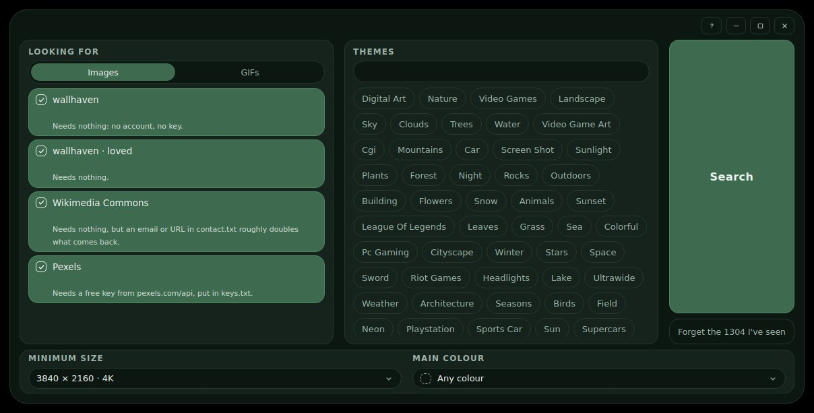

Searches several wallpaper sites at once, shows you small previews, and downloads only the ones you tick. Nothing comes down at full size until you choose it. Also does GIFs.

Choose Images or GIFs, tick the sources you want, pick themes or type your own words, and set a minimum size and a main colour if you care. Specific size takes exact dimensions, for a banner or an ultrawide. Search, say how many, and watch the grid fill. Tick the good ones, press Submit selections, pick a folder, and those download at full size.
Sources: wallhaven and Wikimedia Commons need nothing at all. Pexels and GIPHY need a free key; click the source and the app explains why, links to the sign-up page and gives you a box to paste the key into. It remembers what it has already shown you, so a second search brings new ones.
Windows: download the installer (about 150 MB) and run it. It installs for you only, with no admin prompt, adds a Start menu entry and opens the program. Nothing else to install. The installer is not signed, so Windows may say it protected your PC: choose More info, then Run anyway.
Linux: you need Python 3.9 or newer, and the one package is PySide6 (about 250 MB, because a whole browser engine comes with it). Unzip the source, then inside the folder:
python3 -m venv program/.venv
program/.venv/bin/pip install -r program/requirements.txt
./scan